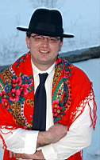

Karnevalski Razgovori – Mauro Doričić
 Žejane – Roža, specifičan ukras na glavi žejanskog zvončara, je simbol sunca, a mnoštvo raznobojnih fijokića koji se s glave spuštaju skoro do poda simbol su novoga i svaka kuća za pusni utorak kad zvončari sakupljaju jaja dobiva fijokić za sreću odnosno kao simbol nečeg novoga. Kao najava novog životnog ciklusa koji kreće s proljećem. Zvončarsku odoru osim toga čine mornarske maje, bijele hlače, a na leđima koža i tri zvonca, dok ostali imaju bijele odore, "žejanski črjeni facol, škuri klobuk, plavi cinturin i črni postoli". Žene nose narodnu nošnju koja se nije mijenjala od početka stoljeća, kaže nam Mauro Doričić, predsjednik folklornog društva "Žejanski zvončari".
Od kada postoji vaše folklorno društvo?
– Registrirali smo se 1996. godine, a običaji koje njegujemo postoje oduvijek iako su se u vremenu malo mijenjali. Prije su, primjerice, na "pusnu nedeju" zvonila samo dva zvončara i to najbolja. Naime, prije toga svi su zvonili i to svaki dan i u civilu, a "odbor za ocjenu" je odabrao najbolji par koji je onda dobio svojevrsno priznanje kroz priliku da se baš tu nedjelju pokaže pred svima.
Koliko imate članova?
– Oko pedesetak starijih od 18 godina, no imamo i podmladak. Trenutno imamo desetak malih zvončara koji obično idu s nama jer vole učestovavati u našim običajima i paradama, a samostalni su učesnici i smotre "mićeh zvončari".
Ono što je specifično je da jaja "pobirate tečuć"?
– Teče se od kuće do kuće, ali prvi je kapo. Tu je još i blagajnik. A osim novca i jaja obično dobivamo i pancetu. Prve subote nakon što završi pust napravi se velika fritaja od sakupljenih jaja i pancete i svaki učesnik dobije po komad koji se servira uz kuhani krumpir. A poslije slijedi još i kiseli kupus s kobasicama ili slično, budući da fešta potraje do kasno u noć.
Osim u najbliže vam Mune s kojima razmjenjujete dobrosusjedske običaje česta su vaša gostovanja budući da ste jedna od najautohtonijih grupa na ovom području. Gdje ste sve do sada bili?
– Osim što sudjelujemo u zvončarskim pohodima na području Općine Matulji idemo još u Viškovo, Opatiju, Lovran i Rijeku, a izvan Hrvatske bili smo u Ptuju, Veroni, Nici, Češkoj i Nizozemskoj.
D. Juretić Biondić
January 27, 2003
© 2003 Novi List